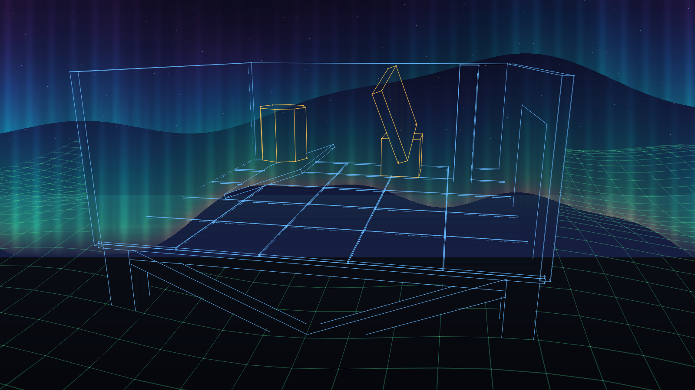
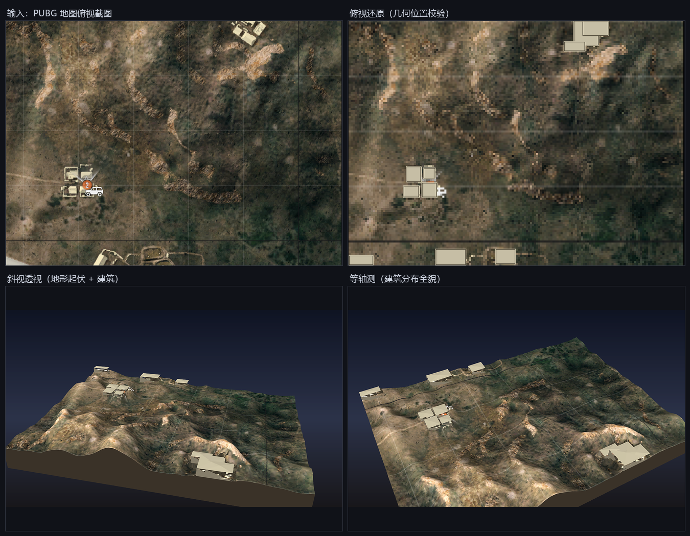

纯 CPU 软件光栅器
把三角形网格逐像素画成线框与极光，两个外壳共用同一套渲染管线：启动动画（不透明全屏，9 秒播完自动退出）与桌面叠层（透明穿透窗口，鼠标转视角 + 射线命中）。

渲染分辨率1600×900 → DWM 拉伸
帧时间26~28 ms（约 37 fps）
极光逐像素 CPU，约 11 ms
窗口WS_EX_LAYERED + UpdateLayeredWindow
一个值得先问的问题：没有 GPU、没有真实数据源，还能把三维世界「算」出来吗？
这个仓库用两条完全不同的路径回答了它 —— 一条把像素逐点算成光，一条把一张平面图反推成体块。
EXE / OBJ 按钮在 GitHub Pages 同源环境下可直接下载；若浏览器直接打开文本，右键「另存为」即可。
01 / Overview
先看清楚约束，才能看懂后面的每个设计选择：这台机器上没有可用的 GPU 管线、没有游戏进程内存、没有 Embree / TBB 的 DLL，甚至没有 numpy。于是所有东西都必须用 CPU 和纯手写的数据结构补齐。
把三角形网格逐像素画成线框与极光，两个外壳共用同一套渲染管线：启动动画（不透明全屏，9 秒播完自动退出）与桌面叠层（透明穿透窗口，鼠标转视角 + 射线命中）。

输入一张 658×481 的正交俯视地图截图，输出可导入 Blender / Unity / UE 的标准 OBJ：带地形起伏、贴图 UV 与 11 栋建筑体块。全程纯 Python + PIL 手写软光栅器。

编译时 /I mock 排在前面，同名影子头优先命中，原工程代码一行不改 —— 它甚至不知道自己在读假数据。
EmbreeCompat.h 用 BVH + Möller-Trumbore 求交补齐 Embree4 的 API 子集，替掉缺失的 DLL。
MockScene.h 按真实 PhysX 结构体布局摆场景；偏移一旦写错，读出来是垃圾值而非空画面，所以 mock 本身就是布局验证器。
02 / Downloads
所有文件都在 main 分支根目录，可直接取用。EXE 为已编译产物，双击即可运行；OBJ 需与同目录的 .mtl、.png 放在一起才能正确关联贴图。
| 文件 | 说明 | 大小 | 下载 |
|---|---|---|---|
| 完整项目 ZIP | 全部 81 个文件（源码 / 产物 / 文档 / 效果图） 推荐：一次拿全，不会漏掉贴图与材质 |
~20 MB | ↓ ZIP |
| 3D/AuroraLauncher.exe | 启动动画：极光天空 + 架空木构，全屏 9 秒 ESC / 空格 / 点击可跳过，播完自动退出 |
558 KB | ↓ EXE |
| 3D/PhysxPUBGMock.exe | 桌面叠层：半透明穿透窗口，中键拖动转视角 F8 退出 |
620 KB | ↓ EXE |
| map3d/miramar.obj | 主交付模型：地形 + 11 栋四坡顶建筑 需配套 miramar.mtl 与 miramar_tex.png |
2.17 MB | ↓ OBJ |
| map3d/miramar.mtl + _tex.png | 材质文件与地形贴图（UV 逐像素对应输入截图） | 575 KB | ↓ MTL ↓ PNG |
| map3d/meta.json | 中间数据：高度场、建筑清单、比例参数与压平后的地基高度 | 240 KB | ↓ JSON |
| 3D/core/ 源码 | 完整 C++ 源码（渲染器 / 极光 / 场景 / 数学库 / 影子头） | — | ↓ 随 ZIP |
| 文档 ×4 | Readme / 使用手册 / 制作思路 / 实现方向 + map3d/README | — | ↓ 随 ZIP |
直链备用（跨域或 Pages 未生效时）：
https://raw.githubusercontent.com/180lisilence/3D-model-construction/main/<路径>
03 / Principle A
先想一步：如果每一帧都要先清背景再 BitBlt，全屏时为什么会闪？答案决定了整个窗口方案。
因为分层窗口把整张位图连 alpha 一次性交给 DWM 合成，没有「先清后画」的中间态；SourceConstantAlpha 顺手就能做全局淡入淡出。渲染管线本身只有极光一处是新增的，其余沿用叠层版：
--scale 0.833 按 1600×900 渲染，DWM 拉伸到屏幕三个手段叠出来的：强度与颜色做 256 级 LUT，sin/pow 每列只算一次（1920 列约 0.3 ms），内层像素循环只剩查表 + 一次混合；不透明底直接加色少一次乘法；渲染分辨率降一档让像素数减到 69%，帧时间从 43 ms 降到 26 ms。柔和的光本来就吃得起这点线条软化。
// 相机 ease-out cubic：起步快、收尾慢 0.0s 黑场，R = 2650 0.0 ~ 2.4s 淡入 + 推近，仰角略降 2.4 ~ N-1.4s 环绕 0.085 rad/s，极光持续漂移 N-1.4s ~ N 淡出 ESC/空格/点击 0.4s 快速淡出
04 / Principle B
想一想：照片里的极光常常是「纯绿一片」，但肉眼见的帘幕为什么顶上泛紫？
因为颜色来自高层大气里原子 / 分子的电子跃迁，按高度分层。相机过曝把上部压成了绿色，真实色标从下往上其实是这样：
| 波长 | 来源 | 颜色 | 高度 |
|---|---|---|---|
| 557.7 nm | 氧原子 O(¹S → ¹D) | 亮黄绿 | 100~150 km |
| 427.8 nm | 氮分子 N₂⁺ 第一负带 | 蓝紫（帘幕底边） | 100 km 以下 |
| 630.0 nm | 氧原子 O(¹D → ³P) | 暗红 | 200~400 km |
| 红 / 品红 | 氮 + 氧的高能态 | 品红紫 | 高纬度强活动 |
下边缘锐利且呈波浪线、向上发散并淡成丝状、以及竖直的细密丝缕（rays）。少了第三条，就只是一坨绿色渐变。
// 1. 下边缘：三个不可公约频率的正弦叠加，看不出周期 wave = 0.62·sin(u·5.83 + t·0.29) + 0.28·sin(u·13.7 − t·0.44 + 1.7) + 0.10·sin(u·31.1 + t·0.71 + 3.4) // 2. 高度：底部强、向上衰减 a = pow(1 − s, 1.12) × (1 − 0.22·s²) // 3. 丝缕：宽层做褶皱、窄层做细丝 rayWide = 0.35 + 0.65·sin(u·46 + t·0.9 + wave·2)² rayFine = (0.5 + 0.5·sin(u·213 + sin(u·7.3 + t·0.41)·1.9 + t·1.6))³
两个参数是被画面逼出来的：衰减指数从 1.55 降到 1.12，否则 s > 0.8 处几乎归零，顶部的蓝紫和品红完全看不见；丝缕幂从 7 降到 3，7 次方细得像下雨，3 次方才是「光幕褶皱」的量级。相位里再叠一层低频扰动，否则条纹整齐得像百叶窗。
另外画两层帘幕（主帘幕 1.00 / 上层 1.10，色标偏移 +105 把高处推向紫红），这样高处自带紫色，不必把整条 LUT 都往紫调、连低处一起染紫。
05 / Principle C
地形起伏 ±70 cm，地板贴地会被穿模。你会怎么修？
第一版贴地：房间 footprint 里 484 个采样点有 240 个（正好一半）高过地板，从开口看进去地板上长出一片绿色网格。第二版把房间内地形压到 -5 并平滑过渡 —— 技术上解决了，但房子四周留了一圈被削平的台面，比穿模还假。
第三版的思路是反过来的：地形一行不改，把房子整体抬起来。LIFT = 140，房间内地形最高 69，净空 71 cm；地板、墙、柱、动态物体全部 +LIFT，相对关系一点没变。架空必然要支撑，于是有了木柱 → 圈梁 → 桁架。
矩形框架（两柱 + 上下横杆）在侧向力下可变形 —— 四个角角度可以任意变，形状不唯一。加一条斜边后三边长度固定，形状锁死，这就是「三角形具有稳定性」的几何依据。每面一个，共 4 面 × 2 根 = 8 根斜撑。
AppendBeam：给两点 a,b 直接生成方梁 u = normalize(cross(d, ref)) v = cross(d, u) // (u,v,d) 右手系 // 于是 AppendBox 的 36 项索引表可原样照抄 // |d.z| > 0.95 时 ref 换 (1,0,0)，避免叉乘退化
每块 166.7 cm、留 2 cm 缝、砖顶比楼板高 5 cm。缝里露出的是楼板顶面，填充密度不同，缝自然比砖暗 —— 格线不用额外画。
但 HoloOverlay.h 里软边只画地形这条修复是前提：
softPairs = (layer == Layer::Terrain)
? el.soft.size() / 2 : 0;
否则 box 每个面的共面剖分对角线会在拆成 25 块后变成满屏斜虚线，像碎玻璃。这不是优化，是瓷砖方案能成立的条件。
06 / Principle D
单张正交俯视图里没有高度信息。你会拿什么当海拔的代理？
从一张俯视图恢复 3D，本质是三件事：平面位置由网格标定、高度由亮度代理、建筑由颜色规则检测。
对每列 / 每行求平均灰度，网格线亮度明显偏离邻居，找出精确位置：
竖线 x = 34,142,250,358,466,574 横线 y = 108,216,324,432 间距全部 108 px（零误差） 1 px = 100/108 = 0.9259 m
这套比例贯穿全流程；换图时用 --cell-m 重标定。
沙漠地图里「亮 = 砂石高地，暗 = 沟谷 / 植被洼地」，但不能直接用灰度：
h = (大尺度模糊 σ≈40px − 均值)×0.55 + (中尺度 σ≈10px − 大尺度)×0.40
中尺度那项是关键：干河床是窄暗带，只做一次大模糊会被抹平，只有「中 − 大」才能把它作为负值凸显成凹沟。
先采样确认颜色特征，再定判据 亮度 > 145 且 18 ≤ 饱和度 ≤ 80，一次性排除过暗地面 / 沟壑与纯中性灰的 UI 图标。
屋顶 (208,196,163) 饱和 45 · 车辆图标 (238,238,238) 饱和 0 · 地面 (70,65,54) 亮度 70。限定 4 个聚落 ROI 得 11 个 bbox，挤出盒体 + 四坡顶，高 6~15 m。
屋顶亮度 200+，直接拿灰度算高度，每栋房子下面都会顶起一座小山，房子叠上去变成「悬空楼阁」。
做法：先建「建筑 + UI」mask，在低分辨率网格上做迭代扩散填补（每轮由外向内填掉一圈，60 轮覆盖最宽 30 px 建筑），把屋顶从灰度图里抹掉再算高度。
房基位置仍是原始地形高度，按 bbox 挤出就会陷进去或悬空。
做法：按每个建筑 bbox 取外围两格一圈地形高度的中位数作为 ground_z，再把 bbox 内地形统一压到这个高度。meta.json 里中央房群在 13.55~15.55 m 台地、右上聚落 1.90 m、底部村庄一栋 -2.20 m。
整套流程里反复用到同一条链路：--obj 导出全部网格 → 算包围盒 → 统计顶点 z 分布。最后 validate_obj.py 校验结果：索引越界 0、退化面 0、地形 39,920 面朝上 0 翻面。预览渲染器是纯 PIL 手写的 —— 画家算法排序 + 朗伯光照 + 2× 超采样 + 地形裙边 + 建筑投影，不需要 numpy。
--cell-m 改，几何形状不变，只是整体缩放。07 / Limits & Build
WS_EX_TOPMOST 管不了绕过 DWM 的游戏。MockScene.h 合成几何，Offset.h 偏移是历史版本，接真机需重扫。:: 看启动动画（全屏 9 秒，可跳过） 3D\AuroraLauncher.exe :: 看桌面叠层（中键拖动转视角，F8 退出） 3D\PhysxPUBGMock.exe :: 重新编译（MSVC 14.44.35207 + SDK 10.0.26100.0） cd 3D && build.cmd :: 重新生成 3D 模型 python map3d/build_map3d.py --step 2 python map3d/render_preview.py all python map3d/validate_obj.py
编译脚本不依赖 vcvars64.bat（它会调 reg.exe 被本机策略拦），直接写死 INCLUDE / LIB；换机器改 build.cmd 顶部三行路径。
① 分色（Wood / Tile / Wall）视觉收益最大 · ② 天空预设表 · ③ 场景配置外置到 scene.ini · ④ 极光挪 GPU 省 11 ms · ⑤ 关键帧运镜 Catmull-Rom · ⑥ 真正的启动器外壳（进度 / 文案 / 音效 / 超时兜底）· ⑦ 接真实 DMA（保留 mock 作回归测试床）。详见 实现方向.md。
README.md 总览与快速开始 · 使用手册.md 全部命令行参数与调参位置 · 制作思路.md 设计决策与 12 条踩坑清单 · 实现方向.md 短 / 中 / 长期路线与技术债 · map3d/README.md 重建流程与全部可调常量。